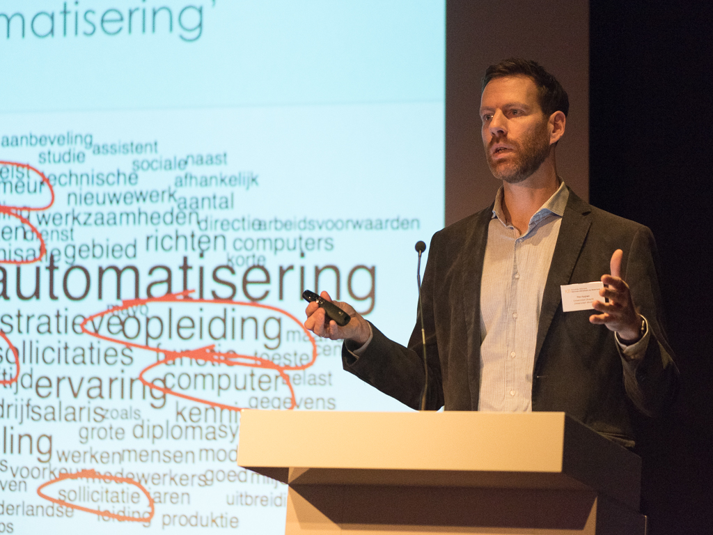

Talks
Presentations
(texts and slides available on request)
2025
‘Zurück in die Zukunft. Die Vermessung der Vergangenheit’, invited talk at the VHS Borken (September 18, 2025, references here)
‘The future of history. Between human interpretation and machine learning’, keynote presentation at the Studenten Geschiedenis Nederland annual conference, Groningen University (June 20, 2025)
‘Historians using machine learning. Two case studies from environmental history’, presentation for the Natural Language and Text Processing group of the Methods and Statistics department of Utrecht University (June 3, 2025; together with Parisa Zahedi)
‘“Auf zerbrochenen Pfeilern können wir keine Brücken bauen.” 80 Jahre Gedenken in den Niederlanden, 1945-2025’, presentation for the Volkshochschule Borken (April 29, 2025; together with Katharina Garvert-Huijnen)
‘The semantics of sustainability. Hoe machine learning kan helpen de conceptuele geschiedenis van duurzaamheid in Nederland te bestuderen’, presentation at Historische Kranten in het AI-tijdperk Conference The Hague (March 21, 2025; together with Pablo Merayo Montes)
2024
‘Benefits and Limits of Reproducibility in History’, keynote presentation (with Pieter Huistra) at the Annual Symposium of the Dutch reproducibility network at the UMCG Groningen (December 6, 2024) (YouTube link)
Commentary of keynote paper Jo Guldi, Historicidagen 2024 in Maastricht (August 22, 2024)
‘Once more with feeling. Replications in History’, presentation (with Pieter Huistra) at the Open Research Week of the University of Essex (February 27, 2024)
2023
‘What AI can do for history (and vice versa). A machine learning approach to studying Dutch public debates’, presentation at the GKG departmental seminar series, Utrecht University (October 2, 2023)
‘Podcasts as public history’, Presentation at the Cummunity Engaged Learning @Humanities seminar series, Utrecht University (June 20, 2023)
‘The Semantics of Sustainability. A machine learning approach to the conceptual history of the Dutch sustainability discourse’, presentation at the UU Environmental Governance Seminar series, Utrecht University (June 5, 2023)
‘Replications in History. Reflections on two experiments’, presentation (with Pieter Huistra) at the Metascience 2023 virtual Symposium: Replication in the Humanities (April 26, 2023)
‘Something happened to the future 2. Reconstructing temporalities in English parliamentary debate, 1800-2005’, presentation (with Joris van Eijnatten) at ESSHC 2023 in Göteborg (April 14, 2023)
‘Was nützt die Fussnote? Datafizierung und Qualitätskontrolle in den (digitalen)Geschichtswissenschaften’, lecture at the Offenes Forschungskolloquium digitale Geschichte Humboldt University Berlin (February 8, 2023) (YouTube link)
2022
‘Something happened to the future’, Deswarte Prize Seminar paper (November 8, 2022) (YouTube link)
Invited speaker at the session ‘Deepfakes en de geschiedwetenschap’, Historicidagen 2022 in Rotterdam (August 26, 2022)
‘Left in the cold. A machine learning approach to map changing discourses around the fossil fuel heritage in the Netherlands, 1950-1990’, presentation (with Gertjan Plets) at the DePOT Conference in Bochum (August 19, 2022)
‘Everyday memory: A computational analysis of changing relation between past and present in Dutch newspapers in the twentieth Century’, long paper at DH2022 Tokyo (July 28, 2022)
‘Mining for clean energy: a machine learning approach to historicized sentiment mining of fossil fuel discourse in the Netherlands’, long paper at DH2022 Tokyo (July 27, 2022)
‘What’s in a footnote? Datafication and the consequences for quality control in historical scholarship’, keynote at Datafication in the Historical Humanities. Reconsidering Traditional Understandings of Sources and Data conference, German Historical Institute Washington (June 3, 2022)
‘Podcasts as public history’, presentation at the UU TLL Inspiratiecafé (February 17, 2022)
2020
Participant and speaker at the Arcadia workshop on research workflows using digitised newspapers, Luxembourg Centre for Contemporary and Digital History, Luxembourg University (January 30-31, 2020)
2019
“Buy healthy, tasty, pure!” A digital text analysis of neoliberal trends in Dutch food culture, 1950-2010’, poster presentation at DH2019 Utrecht (July 10, 2019; with Melvin Wevers)
2018
‘Introduction to text mining’, break-out session for the Utrecht University Data Science Day, Utrecht University (April 20, 2018)
‘Using word embeddings for digital conceptual history’, paper at DHd: Digital Humanities Germany conference, Cologne (February 27, 2018)
2017
‘Using word embeddings to study conceptual change in historical newspapers’, Data Driven Conceptual History: New Methods and Approaches Panel at Genealogies of Knowlegde I, Manchester University (December 8, 2017; with Jaap Verheul)
‘Railways to robotification. The United States business system as reference model for the Dutch economy’, Constructing America, defining Europe conference, Utrecht University (October 8, 2017)
‘The image of the United States in the Dutch press’, Text as a resource. Text mining in historical science conference, German Historical Institute Paris (June 29-30, 2017)
‘Distributional modelling and conceptual change. Tracing concepts in Dutch newspapers using word2vec’, Lorentz Workshop ‘The Mental Lexicon’, Leiden University (June 15, 2017)
‘Keyword generator & dictionary viewer’, lightning talk at the presentation of the renewed KB Lab website, National Library, The Hague (April 11, 2017)
‘Applying distributional semantics on Dutch historical newspapers to trace conceptual change’, talk at the AIUCD 2017 conference, Rome (January 26, 2017)
‘De evolutie van concepten in kranten’, talk at the Historische kranten als ‘big data’ II: Concepten op drift’ conference at the National Library, The Hague (January 20, 2017)

2016
‘Texcavator, a Tool for Cultural Text Mining in Historical Newspaper Repositories’, talk at the What is Digital Humanities? panel at Historikertag 2016, Hamburg (September 22, 2016; with Jaap Verheul)
‘From Keyword Searching to Discourse Mining’, talk at DH2016, Krakow (July 15, 2016; with Juliette Lonij)
‘Design and Implementation of ShiCo: Visualizing Shifting Concepts over Time’, talk at Histoinformatics2016 - the 3rd International Workshop on Computational History, Krakow (July 12, 2016; with Melvin Wevers)
‘How the Big World enters a Small Country. The USA and Germany in Dutch Historical Newspapers’, talk at the Remapping Centre and Periphery Conference at UCL London (June 23, 2016)
‘Conceptual text mining’, talk at the Utrecht University & University of Sheffield Digital Humanities Workshop, Utrecht University (May 12, 2016)
‘From keyword searching to discourse mining’, talk for the Encounters between the Humanities and Computing Colloquium series, Utrecht University (February 18, 2016)
2015
‘Digitaal historisch onderzoek: Kwantitatieve geschiedschrijving revisited?’, talk for the Werkgroep Lichaamsgeschiedenis, Utrecht University (December 16, 2015)
‘Texcavator: a distant reading tool for historical news media’, presentation at the NLeScience Center Lorentz eHumanities Day, Leiden (December 14, 2015)
Workshop ‘Cultural Text Mining’ at the DH Autumn School at Trier University (October 1, 2015)
‘Concepts over time. Tracing concepts in Dutch Newspapers using Sequential Word Vector Spaces’, in the First DiscourseNet Conference at Bremen University (September 24, 2015)
‘Big Data for historical research: Limits, challenges, and opportunities’, in the conference Making ‘Big Data’ human: doing history in the digital age at Cambridge University (September 9, 2015)
‘De belofte van vitamines’, talk for Medisch-Historische Club D. de Moulin, Nijmegen (June 16, 2015)
‘Big Data in historical research’, talk at NWO Bessensap (June 12, 2015)
‘From keyword searching to concept mining’, talk at the National Library, The Hague (May 28, 2015)
2014
‘Finding Reference Cultures in Big Data’, Europeana Newspapers Information Day, National Library of the Netherlands, The Hague (October 28, 2014)
‘Finding Reference Cultures after the “Digital Turn”’ in the international conference Reference Cultures and Imagined Empires from a Western Perspective, 1850-2000, Utrecht University (June 11-13, 2014)
Introduction to the Tranlantis research project, meeting with the Postdemokratie und Neoliberalismus Project team, Helmut-Schmidt-Universität der Bundeswehr Hamburg (April 22-23, 2014)
Workshop presentation on BILAND and Translantis, Mining Digital Repositories Conference, The Hague (April 10-11, 2014)
‘Digitale Zeitungsarchive als Quellen (digitaler) Geschichtsforschung’, Europeana Newspapers Information Day, Staatsbibliothek Berlin (February 28, 2014)
2013
‘Biland: Digital approaches to eugenic thinking in the Netherlands, 1860-1945’, 1st International Workshop on Histoinformatics at the 5th International Conference on Social Informatics, Kyoto (November 25, 2013)
‘Translantis: Het Amerikaanse bedrijfsmodel als referentie voor de Nederlandse economie, 1890-1990’, talk at the Studiedag Stichting bedrijfsgeschiedenis, Utrecht (November 21, 2013)
‘Biland: Digital approaches to eugenic thinking in the Netherlands, 1860-1945’, Descartes Centre for the History and Philosophy of the Sciences and the Humanities, Utrecht University (November 19, 2013)
‘Biland: Digital approaches to eugenic thinking in the Netherlands, 1860-1945’ at the ‘Genetics, eugenics and culture: transatlantic perspectives, 1900-2000’ Symposium at the International Congress of History of Science, Technology and Medicine 2013, Manchester (July 27, 2013)
‘Biland: eine Webapplikation für historisch-komparatives Text Mining in öffentlichen Medien aus unterschiedlichen Ländern’, Textgrid Workshop, Max-Planck-Institut für Wissenschaftsgeschichte Berlin (April 18, 2013)
‘Biland: eine Webapplikation für historisch-komparatives Text Mining in öffentlichen Medien aus unterschiedlichen Ländern’, Max-Planck-Institut für Wissenschaftsgeschichte Berlin (January 15, 2013)
2012
‘Biland: eine Webapplikation für historisch-komparatives Text Mining in öffentlichen Medien aus unterschiedlichen Ländern’, Trier Center for Digital Humanities DH Kolloquium, Trier University (November 28, 2012)
‘Biland: developing a web-application for comparative historical data-mining in public media from different countries’, NeDiMAH Using Large-Scale Text Collections for Research Workshop, The Hague (November 21, 2012)
‘Biland: developing a web-application for comparative historical data-mining in public media from different countries’, Digital Humanities Congress, Sheffield (September 6-8, 2012)
‘Genetic and eugenic thinking in public discourse in the Netherlands and Germany, 1860-1945’, The Biological Future of Man - Continuities and Breaks in the History of Human Genetics before and after 1945, Nuremberg (June 21-23, 2012)
2011
‘De belofte van vitamines’, Farmaceutisch Historische Dag, Arnhem (October 27, 2011)
‘De belofte van vitamines’, Salon Boerhaave, Leiden (October 19, 2011)
Referent at a colloquium on the public discussions about the contested past of the Netherlands and Germany, NIOD Amsterdam (April 1, 2011)
2010
‘The Science of measuring Vitamins’, Drugs, living things and the Problems of Standardization, Braunschweig University (March 25-27, 2010)
2009
‘L.K. Wolff en de professionalisering van het voedingsonderzoek in de jaren twintig en dertig’, Het universitaire bedrijf in Nederland, Utrecht University (November 27, 2009)
‘Der Wissenschaftler als Vitaminexperte’, Graduiertenkolleg Duitsland Instituut Amsterdam (October 9, 2009)
‘De belofte van vitamines’, Promovendicongres Huizinga Instituut, Barchem (April 17, 2009)
‘Wetenschap en propaganda’, Tweede promovendicongres wetenschapsgeschiedenis, Kerkrade (January 22, 2009)
2008
‘Voedselcontrole als taak van de wetenschap, 1918-1945’, Eten en drinken: steeds gezonder? Historische aspecten van voedselveiligheid en -kwaliteit en hun gevolgen, Eindhoven (November 28, 2008)
‘Collaborations between university and industry’, Artificial Cold and International Cooperation in Science, 1870-1920, Leiden (August 4, 2008)
‘Science, industry and government in nutrition research in the Netherlands, 1918-1945’, 17. Studientag Wissenschaftsgeschichte Max-Planck-Institut für Wissenschaftsgeschichte, Berlin (May 16, 2008)
2007
‘Universiteit en industrie, 1914-1940’, Promovendicongres wetenschapsgeschiedenis, Barchem (January 11-12, 2007)
Organisation & hosting
2025
Co-organization and co-hosting (with Steven Claeyssens) of the conference ‘Historische kranten in het AI-tijdperk’ in the Dutch National Library, The Hague (March 21, 2025)
Co-organization and co-hosting (with Carsten Schnober, Jose Angel Daza, Parisa Zahedi, Mees van Stiphout and Willem-Jan Faber) of the workshop ‘Using AI to analyse historical texts’ at the Dutch National Library, The Hague (March 20, 2025)
2022
Co-organization (with Parisa Zahedi and Carsten Schnober) and hosting of the workshop ‘Developing Dutch Language Models for Historical Research’ at the NL eScience Center Amsterdam (December 9, 2022)
Co-organization and co-hosting (with Pieter Huistra) of the panel ‘Tussen vraag en verhaal: het hoe en waarom van replicatie in historisch onderzoek’ at Historicidagen 2022 Rotterdam (August 26, 2022)
2018
Co-organization (with Joris van Eijnatten) of ‘Using Computational Techniques to Account for Cultural Change over Time’ Panel at ESSHC 2018, Belfast (April 5, 2018)
2017
Co-organization (with Jaap Verheul) of ‘Data Driven Conceptual History: New Methods and Approaches’ Panel at Genealogies of Knowlegde I, Manchester University (December 8, 2017)
Co-organization (with Lisanne Walma and Peter van Hooff) and host of national text mining workshop, Utrecht University (November 7-8, 2017)
Co-organization (with Lisanne Walma) and host of text mining in education workshop at Historicidagen, Utrecht (August 26, 2017)
Host of the ‘Geschiedenis in een digitale wereld’ discussion panel at Historicidagen (August 25, 2017)
2016
Co-organization (with Prof. Joris van Eijnatten) and host of the session ‘Visualizing Modernity: using digital techniques to trace the rise of Modernity in Europe’ at ESSHC 2016, Valencia (April 1, 2016)
2015
Organization and host of expert meeting Digital Humanities at Utrecht University (June 10, 2015)
Co-organization (with Melvin Wevers and Ilja Nieuwland) and host of THATCamp Utrecht (January 28-29, 2015)
2014
Co-organization (with Jaap Verheul) of the international conference Reference Cultures and Imagined Empires from a Western Perspective, 1850-2000, Utrecht University (June 11-13, 2014)
Co-host (with Bram Mellink) session ‘Bedolven onder bronnen’ at THATCampDH14, The Hague (January 14-15, 2014)

2013
Organization and co-host of the ‘Genetics, eugenics and culture: transatlantic perspectives, 1900-2000’ Symposium at the International Congress of History of Science, Technology and Medicine 2013, Manchester (July 27, 2013)
Chair of the ‘Vernetzung in Wirtschaft, Wissenschaft und Technik’ panel at the conference ‘Mittler, Verflechtung, Netzwerke: Deutschland und die Niederlande im 20. Jahrhundert’, Amsterdam (September 26-27, 2013) (an account of the conference can be found here at H-Soz-u-Kult)